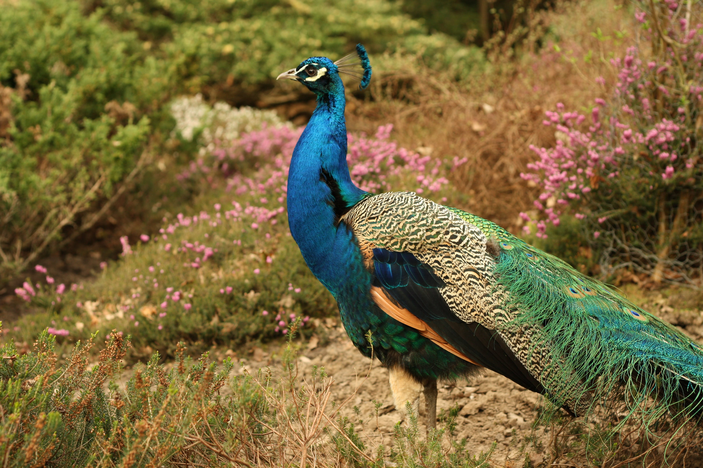
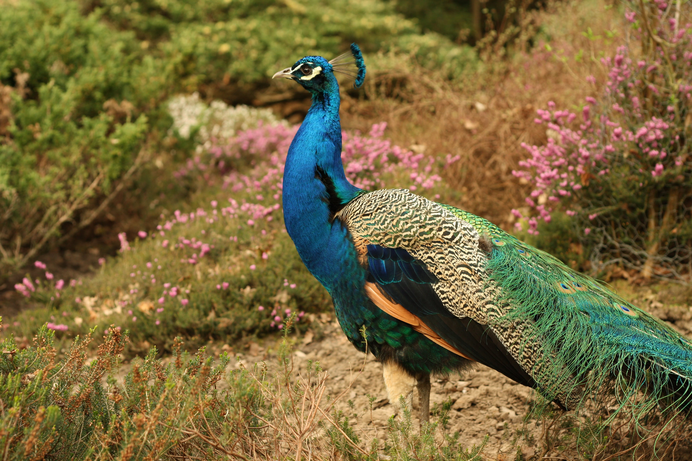
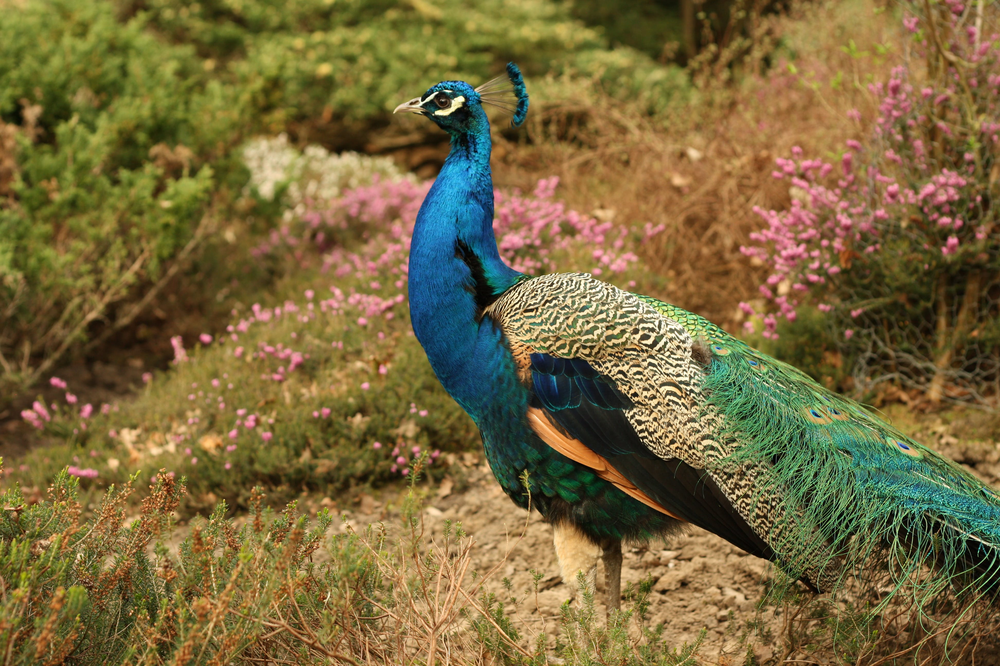
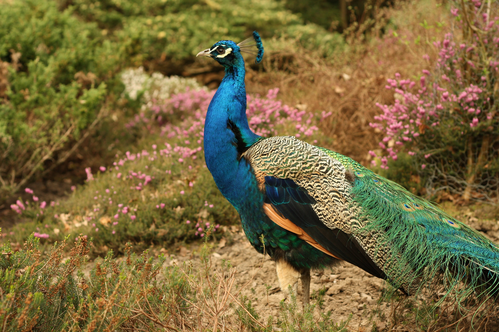

The Indian peafowl (Pavo cristatus), also known as the common peafowl, and blue peafowl, is a peafowl species native to the Indian subcontinent. It has been introduced to many other countries. Male peafowl are referred to as peacocks, and female peafowl are referred to as peahens, although both sexes are often referred to colloquially as a "peacock".[2] Indian peafowl display a marked form of sexual dimorphism. The peacock is brightly coloured, with a predominantly blue fan-like crest of spatula-tipped wire-like feathers and is best known for the long train made up of elongated upper-tail covert feathers which bear colourful eyespots. These stiff feathers are raised into a fan and quivered in a display during courtship. Despite the length and size of these covert feathers, peacocks are still capable of flight. Peahens lack the train, have a white face and iridescent green lower neck, and dull brown plumage. The Indian peafowl lives mainly on the ground in open forest or on land under cultivation where they forage for berries, grains but also prey on snakes, lizards, and small rodents. Their loud calls make them easy to detect, and in forest areas often indicate the presence of a predator such as a tiger. They forage on the ground in small groups and usually try to escape on foot through undergrowth and avoid flying, though they fly into tall trees to roost.